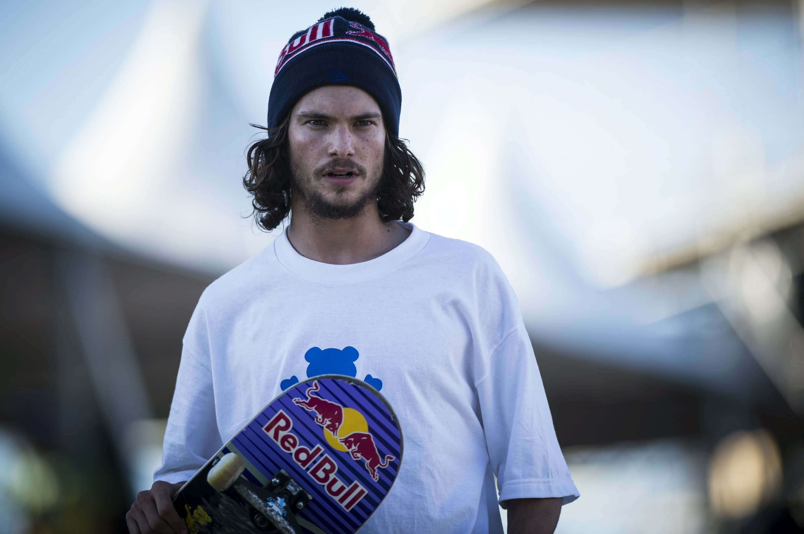

About Torey Pudwill
Pudwill was born in Simi Valley, California, United States (US). In a February 2013 online interview, Pudwill explained that Justin Shulte (also a sponsored skateboarder as of March 2013) was the friend that he would mostly skateboard with during his early adolescence.

Sponsors
Nike
Venture
Grizzly
Primitive
About his skateboard
- Plan B P-Rod Urban P2 8.0 skateboard Deck: $64.95
- Venture Mid Raw Silver & Red Skateboard Truck: $19.95
- Plan B Ryan Sheckler Pro Spec 53mm Skateboard Wheels $40.00
- Diamond Supply Co Diamond Rings Abec 5 Skateboard Bearings $17.95
- Grizzly Griptape Grizzly P-Rod Grip Tape$ $11.95
- Diamond Supply Co 1 Hella Tight Skateboard Hardware $3.95
Famous Tricks
Paul Rodriguez skates anything he can find. in an interview with EXPN, P-Rod said it's not so much what he can do, but where he likes to do it. "My favorite things to skate are ledges, rails, stairs, pretty much anything you can skate." (EXPN)